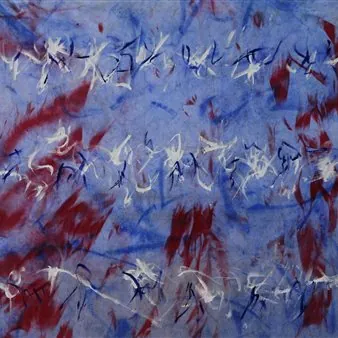

da sab 28 nov a dom 13 dic
Mostra "Natura Naturans (il dinamismo della natura che crea)" e omaggio a Carlo Fontana
Sabato 28 novembre, dalle ore 17.00 alle 20.00 ci sarà l’inaugurazione della mostra “Natura Naturans (il dinamismo della natura che crea)” di Martin Kralj, a cura dell’architetto Boris Grgič. La ricerca di Kralj si sviluppa attraverso il linguaggio dell’astrazione, che invita lo…
 Indicazioni
Indicazioni
- Costi e prenotazioni
- Costo non indicato · Prenotazione non indicata
- Programma
- Programma da verificare. Apri la fonte ufficiale per orari e possibili aggiornamenti.
- In caso di maltempo
- Nessuna indicazione specifica pubblicata.
- Note
- Acquisito automaticamente dalla fonte.
L’EVENTO
Descrizione completa
Sabato 28 novembre, dalle ore 17.00 alle 20.00 ci sarà l’inaugurazione della mostra “Natura Naturans (il dinamismo della natura che crea)” di Martin Kralj, a cura dell’architetto Boris Grgič. La ricerca di Kralj si sviluppa attraverso il linguaggio dell’astrazione, che invita lo spettatore a un coinvolgimento attivo, sollecitandone emozioni, pensieri e interpretazioni personali. L’artista lavora all’aperto, in ogni stagione, lasciando che gli elementi naturali partecipino al processo creativo. Le tele, sulle quali traccia inizialmente segni con terre colorate, vengono esposte per diverse settimane agli eventi atmosferici: pioggia, sole o vento. È il tempo, insieme all’azione degli agenti atmosferici, a trasformarne la superficie e a lasciare tracce imprevedibili. A partire da ciò che permane, Kralj interviene successivamente con il colore acrilico, dipingendo su entrambi i lati della tela e dando forma a composizioni astratte che evocano strutture, ritmi e suggestioni del mondo naturale. Ne nasce un dialogo tra gesto artistico e processi naturali, in cui l’opera si configura come il risultato di un incontro tra l’intervento umano e l’azione degli elementi. In questo modo la natura non è soltanto fonte d’ispirazione, ma parte integrante del processo creativo, capace di imprimere alla materia segni e trasformazioni che l’autore poi accoglie e rielabora. In contemporanea, su selezione di Roberto Vidali, direttore esecutivo dell’Associazione Juliet, le vetrine di Ca’ Prandi, accoglieranno alcune opere di Carlo Fontana (Napoli, 1/2/1951 - Casier 16/4/2025), come omaggio a questo artista che molto ha lavorato con la città di Trieste e alla quale ha lasciato numerose testimonianze, tra le quali si ricordano l’installazione multipla realizzata per l’ITIS, la “Crocifissione” (inserita nelle collezioni del Museo Diocesano) e un paesaggio di grandi dimensioni collocato nella sede della Soprintendenza di piazza Libertà. Precedenti e memorabili progetti espositivi legati al territorio giuliano sono stati realizzati per il Centro La Cappella Underground (Trieste, 1986, sede di via Franca), per il Teatro Miela (Trieste, 1990), per lo spazio Juliet di via Madonna del Mare (Trieste, 1997), per il Twins Club (Trieste, 2008), per le Serre di Villa Revoltella (Trieste, 2009), per il Museo Archeologico Nazionale (Aquileia, 2015), per il Museo Carà (Muggia, 2018). La chiusura di questo doppio progetto espositivo è prevista per domenica 13 dicembre 2026.
IL PROGRAMMA
Programma e orari
Appuntamenti raccolti dalle fonti elencate. Dove manca un orario, non è ancora disponibile in questa scheda.
Programma pubblicato
- Dal 2026-11-28 al 2026-12-13
INFORMAZIONI UTILI
Prima di partire
- Controllare la fonte prima di partire.
ORGANIZZAZIONE